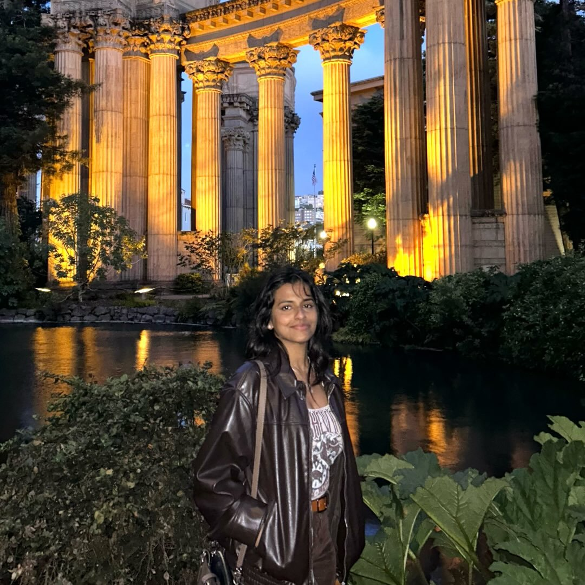

01 · about

I build systems at the intersection of agentic AI, distributed computing, and supply chain logistics. I am drawn to the engineering layer where intelligence meets infrastructure — reasoning systems, real-time data pipelines, and the coordination problems that emerge at scale.
background
I grew up in the UAE, transient by design and always building. I moved to the United States for college, landing at the University of Illinois Urbana-Champaign to study Computer Engineering. The decision was specific: I wanted to be close to serious engineering, to research, to the kind of environment where the work mattered.
At UIUC, I focused on software systems, AI and machine learning, and databases. I also took coursework in product marketing and management through the Technology and Management program, which gave me a different lens for thinking about what software is actually supposed to do for people and organizations. Good engineering and good product thinking are not so different when you get close enough.
professionally
I am currently a Software Development Engineer at Tesla on the Supply Chain and Logistics team in Fremont, CA. Before that I was an intern on the Factory Team, where I built agentic AI features for demand planning and global trade compliance using LangGraph and LangChain, and developed full-stack tooling for the Warp ERP system. That internship gave me a clear picture of the kinds of problems I want to work on.
What draws me professionally is the engineering layer where AI becomes infrastructure. Not AI as a product label, but AI as a reasoning layer inside systems that coordinate people, goods, and decisions at scale. Supply chain is a particularly interesting domain for this: the problems are combinatorial, the data is messy, and the stakes are real. I want to keep working at that intersection of machine intelligence and distributed systems.
In the longer arc, I am interested in building software that does something legible and important in the world. Whether that stays in logistics, or finds its way to some other domain I have not encountered yet, I want the engineering to tangibly change how people work.
beyond work
Outside of engineering, I try to keep my attention spread across things that are slow and require presence. The things that do not have dashboards. Paul Thomas Anderson is my favorite director, and I am drawn to cinema that takes its time. Some of my favourite musical artists include Dire Straits, Led Zeppelin, Chet Baker, and Burt Bacharach. I enjoy reading particularly works by Joan Didion, and Paul Kalanithi, alongside Ludwig Wittgenstein, though I'm currently working through a reading slump. I also train in Kathak, an Indian classical dance form, which has become one of my quieter ways towards discipline and a deliberate counterweight to everything provisional .